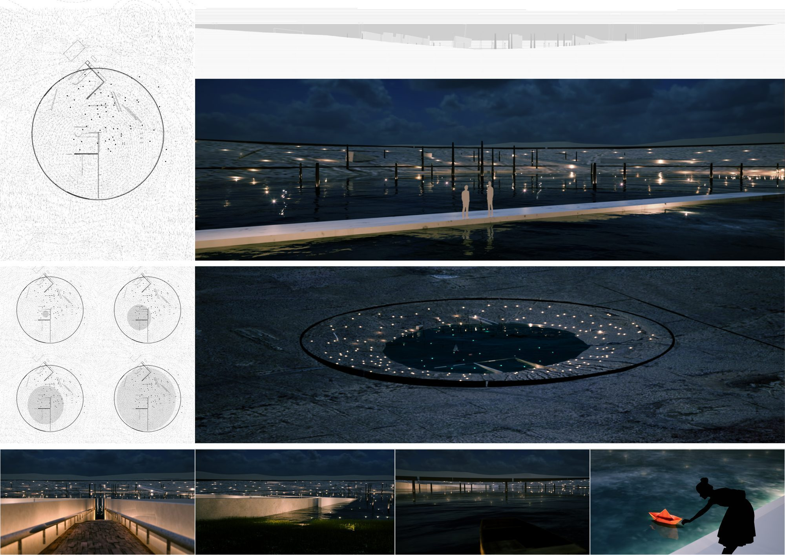

The Last Nuclear Bomb Memorial imagines a place that marks the end of nuclear weapons. Organized around a single excavated void — a crater turned inward — the project uses earth, water, and descent to stage an experience of loss and resolve, treating the memorial less as a monument than as a landscape one passes through.
The Last Nuclear Bomb Memorial 设想一个标记“核武终结”的场所。设计围绕一处下挖的虚空——一个向内翻转的弹坑——以土、水与下沉的路径营造关于失去与决心的体验，把纪念性更多当作一处可被穿行的景观，而非一座纪念碑。
